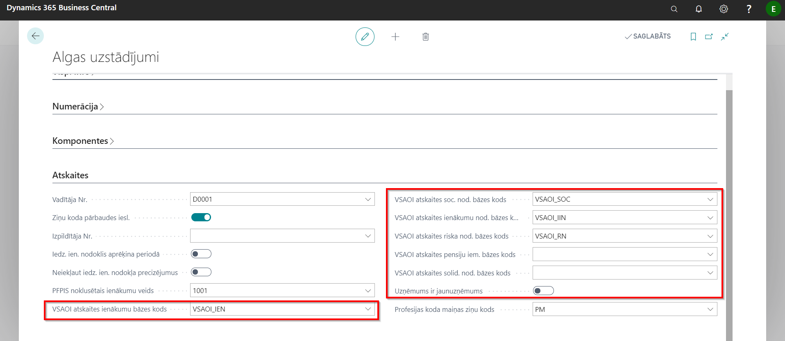
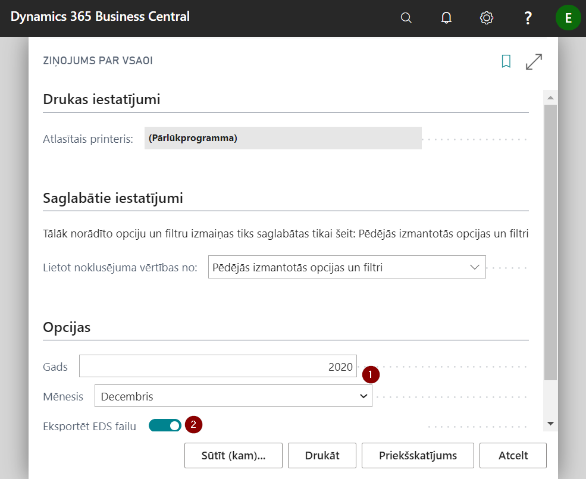
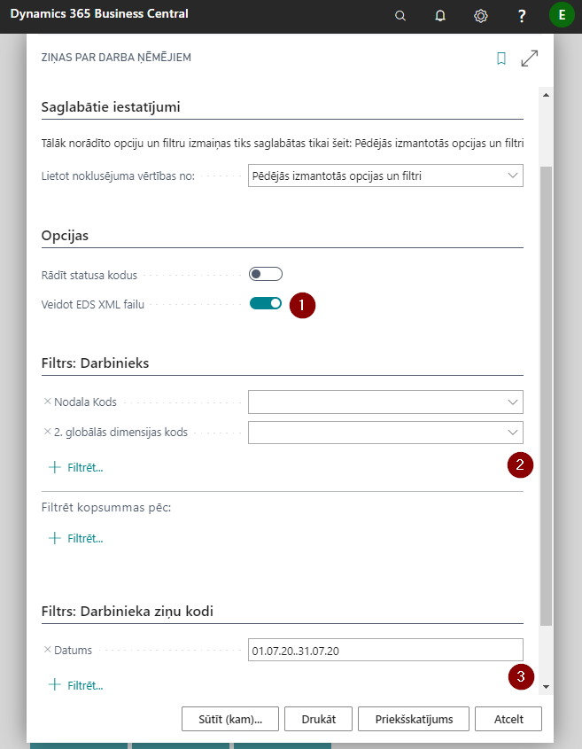
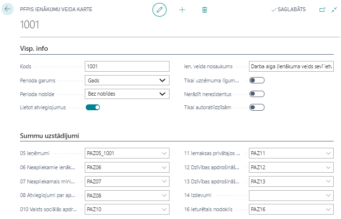
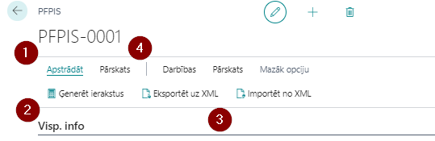

EDS atskaites
Ziņojums par VSAOI
Uzstādījumi
Ziņojuma atspoguļoto datu uzstādījumi ir pieejami Algu uzstādījumu cilnē Atskaites, kam detalizēts lauku apraksts pieejams nodaļā Algu uzstādījumi.

Sagatavošana
Lai sagatavotu Ziņojumu par VSAOI, atskaites drukāšanas logā izvēlieties periodu, par kuru vēlaties sagatavot atskaiti ( ) un izvēlieties Eksportēt EDS failu (
) un izvēlieties Eksportēt EDS failu ( ), ja vēlāties izdrukājot atskaiti sagatavot arī failu augšupielādei EDS sistēmā.
), ja vēlāties izdrukājot atskaiti sagatavot arī failu augšupielādei EDS sistēmā.

Ziņas par darba ņēmējiem
Lai sagatavotu Ziņas par darba ņēmējiem, atskaites drukāšanas logā jāatzīmē nepieciešamība sagatavot eksporta failu (), ja nepieciešams, filtrā jāiestata kādi specifiski darbinieku atlases kritēriji () un, ja nepieciešams, norāda periodu ( ) par kādu nepieciešams sagatavot atskaiti.
) par kādu nepieciešams sagatavot atskaiti.

Paziņojums par fiziskai personai izmaksātām summām
Uzstādījumi
PFPIS atvieglojumi apkopoti kodi, kas sadala PFPIS atskaiti pēc piemērotajiem atvieglojumiem. Kodi un nosaukumi ievadāmi saskaņā ar VID Metodiskiem materiāliem.
Ziņojuma atspoguļoto datu uzstādījumi ir pieejami PFPIS ienākuma veidi reģistrā. Reģistrā ir apkopotas ienākumu veidu kartes, kas definētas saskaņā ar VID metodiskajiem materiāliem.

Cilne: Visp. info
| Lauka nosaukums | Apraksts |
|---|---|
| Kods | Ienākuma veida kods no VID metodiskajiem norādījumiem. |
| Perioda garums | Gads vai mēnesis. |
| Perioda nobīde | Norāda vai ir nobīde, ja izmaksa atšķiras no aprēķina perioda: Bez nobīdes; -1 Mēnesis (piemēram, PFPIS sarakstā par augustu tiks atrādīti fiziskajām personām aprēķinātie ienākumi par jūliju); -2 Mēneši. |
| Lietot atvieglojumus | Ja ir atzīme šajā laukā, tad norāda, ka attiecīgajam kodam vajag lietot atvieglojumus. |
| Ien. veida nosaukums | Nosaukumu ievada saskaņā ar Metodisko materiālu. |
| Tikai uzņēmuma līguma darbinieki | Atzīmē, ka attiecīgajā kodā iekļauj tikai uzņ.līg.darb. |
| Nerādīt nerezidentus | Ja ir atzīme šajā laukā, tad netiks rādīti nerezidenti. |
| Tikai autoratlīdzībām | Tiks rādītas tikai autoratlīdzības. |
Cilne Summu uzstādījumi
Attiecīgā laukā norāda atbilstošās bāzes, kas aprēķinās atskaitē atbilstošā lauka vērtību.
Sagatavošana
Lai izveidotu paziņojumu par fiziskajām personām izmaksātajām summām, jāveido jauns dokuments (jeb buferis) sarakstā PFPIS virsraksts, kas pieejams ievadot nosaukumu sistēmas meklētājā.
PFPIS buferis sastāv no 3 daļām – Visp. info, Kopsummas, PFPIS rindu apakšforma.
Lai sagatavotu buferi, aizpildiet cilnes Visp. info laukus un rīkjoslā klikšķiniet uz pogām Apstrādāt () - Ģenerēt ierakstus ().
Ja Visp. info laukā tiek izvēlēts Gads, tad tiks veidots paziņojums par aktīviem darbiniekiem uz 31. decembri. Ja minētajā laukā norāda mēnesis, tad tiks sagatavots paziņojums par atbrīvotiem darbiniekiem.
Kad dati buferī ir saģenerēti un pārbaudīti, var sagatavot eksporta failu iesniegšanai EDS noklikšķinot uz pogas Eksportēt uz XML ().
Pirms iesniegšanas EDS, pārskatu var izdrukāt un pārbaudīt klikšķinot rīkjoslā uz pogām Pārskats - Drukāt kopsavilkumu vai Drukāt darbinieku.

Cilne Visp. info
| Lauka nosaukums | Apraksts |
|---|---|
| Nr. | PFPIS dokumenta numurs. Aizpildās automātiski. |
| Kods | Uzņēmuma reģistrācijas Nr., aizpildās automātiski no Uzņēmuma informācija. |
| Apraksts | Dokumenta apraksts. |
| Gads | Bufera veidošanas gads. |
| Mēnesis | Izvēlas no saraksta bufera veidošanas mēnesi. Ja nepieciešams paziņojums par atbrīvotajiem darbiniekiem, izvēlas mēnesi, kurā darbinieks/-i ir atlaists/-i. Ja nepieciešams gada paziņojums par visiem darbiniekiem, tad sarakstā izvēlas Gads. |
| Noslēgts | Pazīme, ka buferis ir iesniegts EDS un noslēgts. |
| Izpildītājs | Atbildīgās personas vārds un uzvārds. |
| Izpildītāja tālruņa nr. | Atbildīgās personas tālruņa nr. |
Cilne Kopsummas
R05..R16 – bufera rindu vērtību lauku kopsummas
Cilne PFPIS rindu apakšforma
Bufera rindas ģenerējas automātiski palaižot funkciju Ģenerēt ierakstus. Bufera sagatavošanai var izmantot dažādus filtrus, ko piedāvās rindu ģenerēšanas logs.
IINNR saraksts
Lai izveidotu jaunu Paziņojumu par izmaksātiem ienākumiem nerezidentiem, izveidojam jaunu dokumentu IINNR virsraksts sarakstā noklikšķinot uz pogu Jauns. Aizpilda nepieciešamo informāciju un sagatavo failu eksportam uz EDS sistēmu.
Tip
Lai sagatavotu atskaites eksporta failu, sistēma var prasīt aizpildīt Uzņēmuma uzstādījumos laukus Tālruņa Nr un E-pasts.